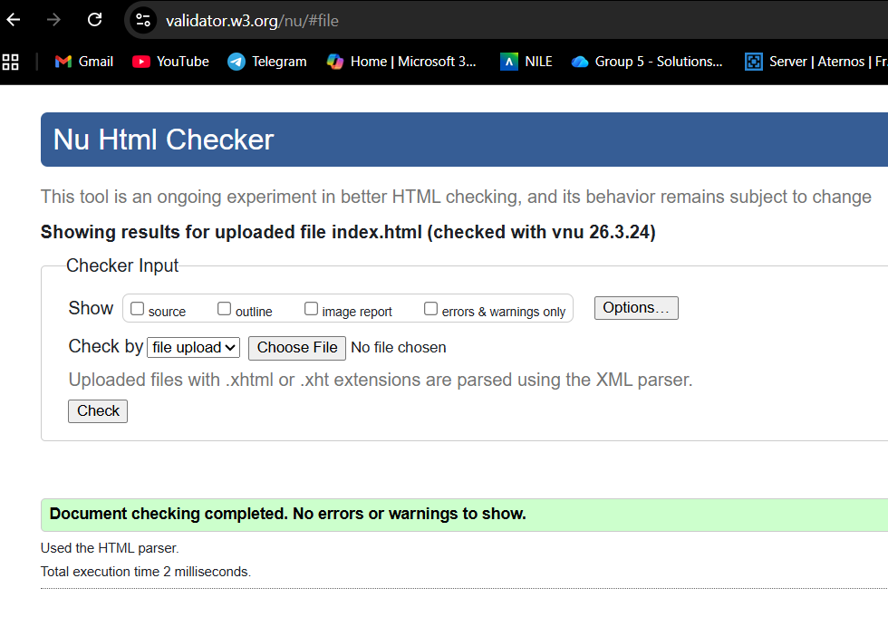
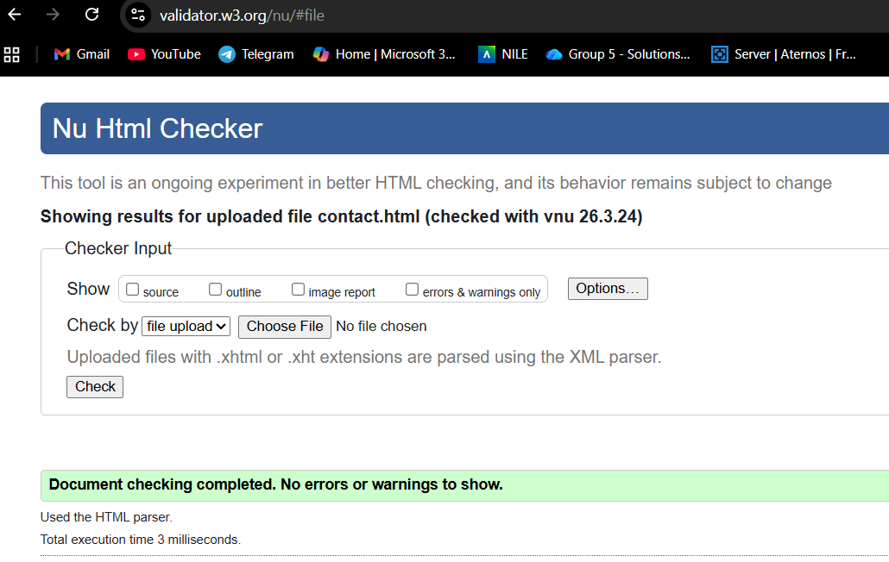
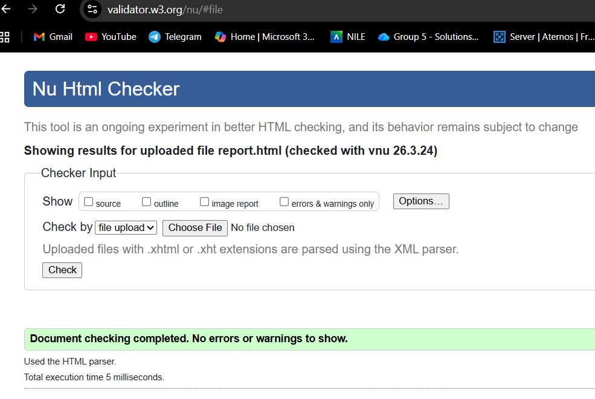
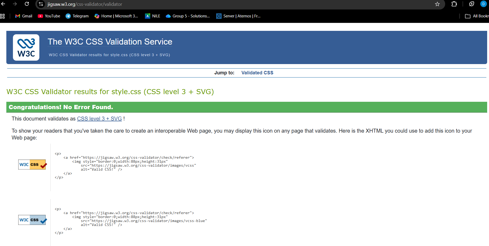

Introduction
This website was created as part of my web development assignment. The aim of the project was to design and build a multi-page portfolio website using HTML and CSS. The website includes a homepage, project page, contact page, video demonstration page and this report page. The purpose of the website is to present my work in a clear and organised way while also showing the skills I have learned during the module.
Design and Layout
The website uses a consistent layout across all pages, including a header, navigation bar, main content area, sidebar and footer. I used CSS Grid to structure the page and keep the content organised. I chose a purple colour theme because it is my favourite colour and I wanted the website to have a more personal style. I also used a gradient background which fades from purple into a darker colour towards the bottom of the page. I think this makes the website look more interesting than using a plain background while still keeping it easy to read.
Development Process
I created the website step by step. First, I built the basic structure of each page using HTML. After that, I added CSS to style the pages and improve the layout. I used Visual Studio Code to write the code and GitHub to manage my progress. Making regular commits helped me keep track of changes while I was building the website. GitHub was also useful when I made mistakes because it allowed me to return to an earlier version of my work and continue from there without losing everything.
Features
The website includes a navigation menu that links all pages together and makes it easier to move around the site. It is also responsive, which means the layout changes to fit smaller screens better. The project page uses a grid layout to display placeholder project content. The contact page includes a contact form and contact information. The video demonstration page includes a video section where I can show and explain my website and code. Overall, the main features were added to match the assignment requirements and make the website easy to use.
Validation
I tested all of my HTML pages using the W3C HTML Validator and tested my CSS using the W3C CSS Validator. After correcting the errors, all of the pages validated successfully. This is important because it shows that the code follows web standards and helps improve the quality of the website.
HTML Validation




CSS Validation

Reflection
During this project, I improved my understanding of HTML and CSS and learned more about layout, styling and responsive design. I also improved my ability to organise files, test code and use GitHub to save my progress. One of the main things I learned was how important it is to build the website in small steps and check that everything works as I go along. If I had more time, I would improve the website further by adding more content, improving the mobile menu and making the design even more polished.